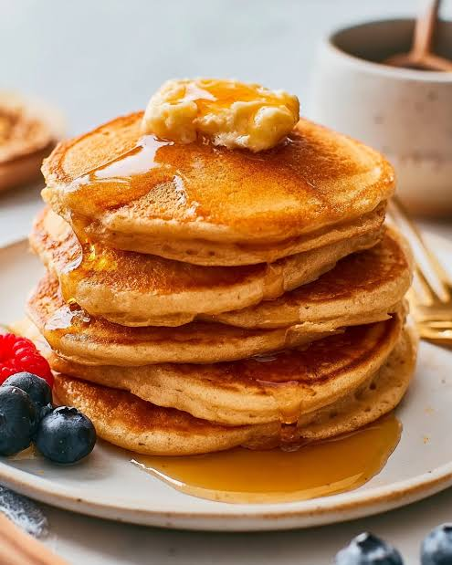

Home
Fluffy Mayo Pancakes

The Secret to Extra Fluffy Pancakes? Mayonnaise.
These fluffy mayo pancakes are light, tender, and incredibly easy to make with pantry staples. The mayonnaise adds richness and helps create a perfectly soft texture, making these pancakes extra fluffy and delicious with butter and syrup.
Ingredients
- 1 1/2 cups flour
- 2 1/2 tablespoons sugar
- 1 1/2 teaspoons baking powder
- 1/4 teaspoon kosher salt
- 1/2 cup mayonnaise
- 1 1/4 cups water
- 1 1/2 teaspoons vanilla extract
- butter for serving
- syrup for serving
Steps
- Whisk together flour, sugar, baking powder, and salt in a bowl and create a well in the center.
- Add mayo, water, and vanilla extract to the well and stir until well combined, then fold the wet ingredients into the dry ingredients and stir until just combined.
- Melt butter over medium heat in a large nonstick skillet or griddle. Spoon about 1/4 cup batter into the prepared pan and spread it into a round shape.
- Cook, undisturbed, until bubbles form on the surface and lightly browned around the edges, about 3 minutes. Flip and cook until lightly browned on the second side.